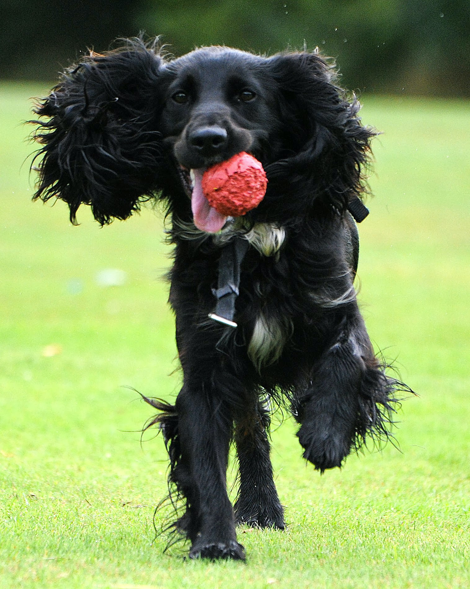
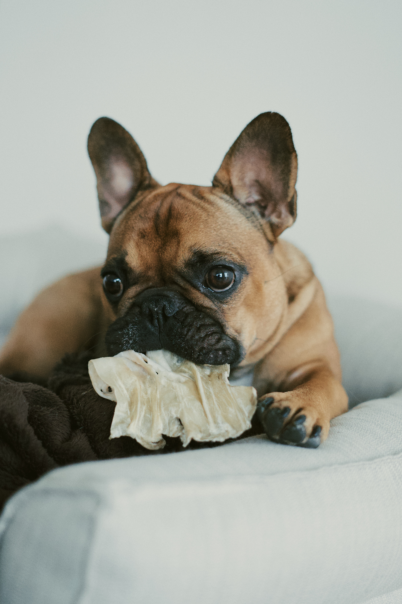

|
|
Common Breeds | Rare Breeds | Dogs of Note | Gallery | Let's help some dogs |
Labrador Retrievers |
Cocker Spaniels |
French Bulldogs |
| Information | Gallery | Information | Gallery | Information | Gallery |
Labrador RetrieverLabrador retrievers were originally bred in the UK as gun dogs in the 1890s, from Canadian fishing dogs. They are medium sized dogs, weighing around 30 kg, and they come in three main colours: yellow, chocolate/liver, or black. There are two main breeding lines: show and working, and they have differences in appearance. Show dogs are stockier, with fuller faces and less energetic temperaments. Working lines are leaner with longer faces and require more stimulation. Both lines are excellent swimmers, helped by their waterproof coats and webbed toes, which also help them in snowier climate. Because of their friendly and calm nature, Labradors are frequently used as therapy dogs, whilst their intelligence and loyalty makes them ideal dogs for use in the Armed Forces and the police. Their biggest health risk is obesity, with over 25% of all Labradors in the US being classed as overweight. This issue is exacerbated by the fact that they are often motivated by food, and that they are very happy to be lazier than is good for them. Over 40,000 registrations of Labradors were made with the UK Kennel Club in 2020. |
 |
Cocker SpanielCocker Spaniels are small dogs, originally bred as gun dogs to flush the birds into the air. There are two lines to this breed: English and American. The American line is smaller and with a smaller head, while the English line is taller and narrower. Within the English line, there is an additional strain of working cockers. The first mention of reference to this breed is in 14th century writings (written as “spaynels”), and the English line was first recognised by the Kennel Club in 1892. The breed is certainly well-established. Cockers can have a variety of colours, from all black to all white, passing through tricolor on the way. They weigh around 15 kg. Their ears can be long and folded, which makes the breed more prone to ear infections. The average lifespan of the breed is well over 10 years. In 2020 there were 25,000 registrations of cocker spaniels with the Kennel Club. |
 |
French BulldogFrench Bulldogs are the result of crossbreeding between toy bulldogs in the UK and local ratters in Paris in the mid 1800s. Pre 1835, these dogs were originally used for blood sports such as bull baiting, but when these games were outlawed the bulldogs then became companions. Terriers were then added to the breed, bringing with them the long straight ears. They are stocky and compact and with a mild and friendly personality. According to the American Kennel Club, the breed should be muscular, with a smooth, wrinkly coat, a large head, bat ears, and should weigh around 13 kg. Colours can be brindle, fawn, cream or a combination of the above. Because of the breeding as companions, French bulldogs are very people orientated, which can make them prone to separation anxiety, although it makes them much easier to train. Their short legs make it difficult to get out of bodies of water, so even though they love to swim, they have been known to drown after falling into pools. Because of their huge rise in popularity, selective breeding has caused this breed to be disproportionately affected by some health issues, including airway obstructive syndrome and ear infections, and their single layer thin coat makes it impossible for them to regulate their temperature – heat strokes are not uncommon. Their average lifespan is around 10 years. In 2020, there were just under 40,000 French bulldogs registered with the Kennel Club in the UK. |
 |